Twenty ways to rebuild imanneo.dev
Round two is in: ten modern samples that start from what the web looks like right now, not from your story. The first ten are still here. Every option is a working page, not a picture, so open a few, click around, then tell me a number.
NewRound two · 11 to 20
Modern samples
Each one takes an idea from current sites and trend lists and fills it with your real content. Samples 18, 19 and 20 are in 3D.
-
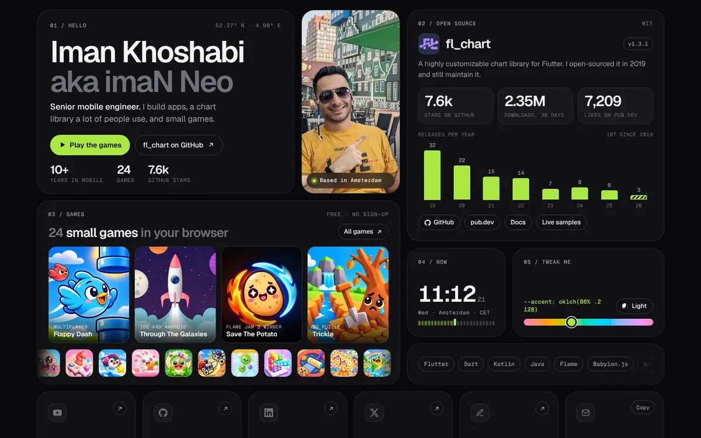

11Dark, tiles
Bento
The whole site on one screen, as a grid of live tiles: numbers that count up, a release chart, a games shelf, a clock on Amsterdam time and the links. Tiles glow under the cursor.
TryDrag the accent slider in the tweak me tile, then switch the page to Light.
Open option 11 -
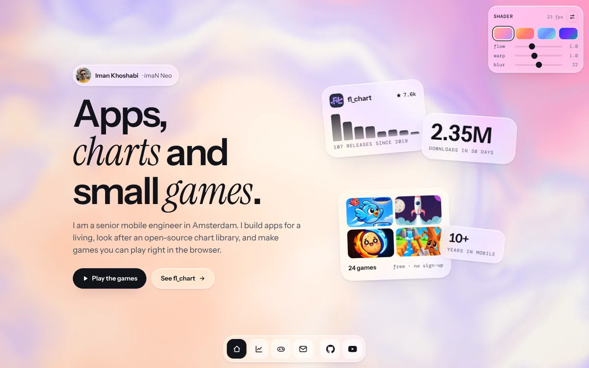
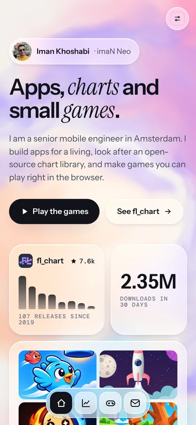
12Light, glassy
Liquid glass
Frosted glass panels floating over a slow colour field drawn by a shader, with a dock at the bottom that swells under the cursor.
TryIn the Shader panel in the top corner, try Sunset or Night and move the sliders.
Open option 12 -
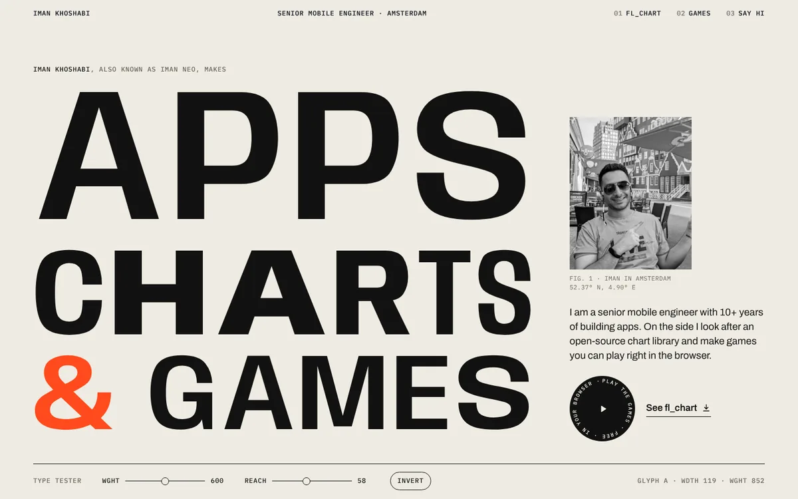
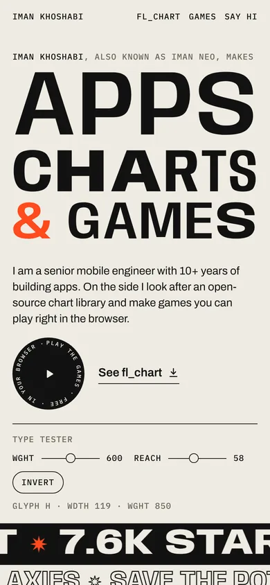
13Light, editorial
Kinetic type
Big type that moves. The headline changes weight around the pointer, the marquee leans with your scroll speed, and game covers follow the cursor down the list.
TryMove the pointer over the big headline, then play with the type tester under it.
Open option 13 -
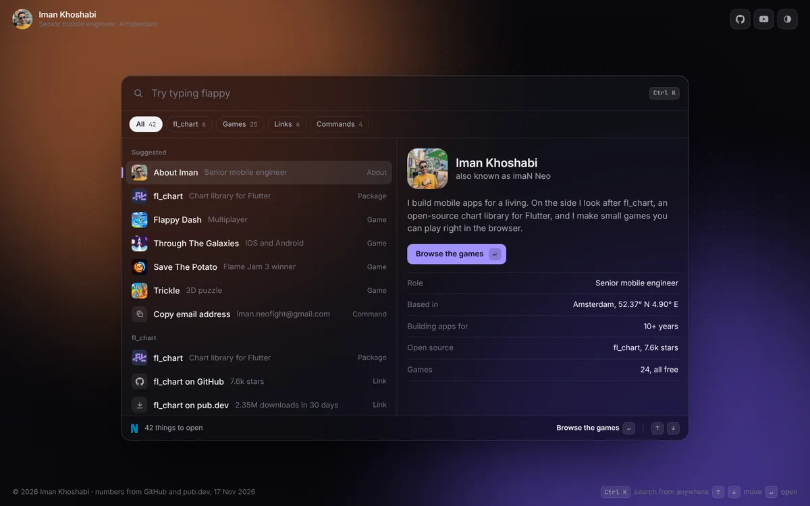

14Dark, keyboard
Command palette
The site is one search box. Type to find a game, a link or a number, move with the arrow keys and press Enter.
TryType
Open option 14flappy, move with the arrow keys and press Enter. -


15Dark, canvas
Node graph
A node editor on an endless canvas. You, fl_chart, the games and the links are nodes wired together, and everything can be dragged.
TryDrag a node by its title, zoom with Ctrl + scroll, then press Tidy.
Open option 15 -
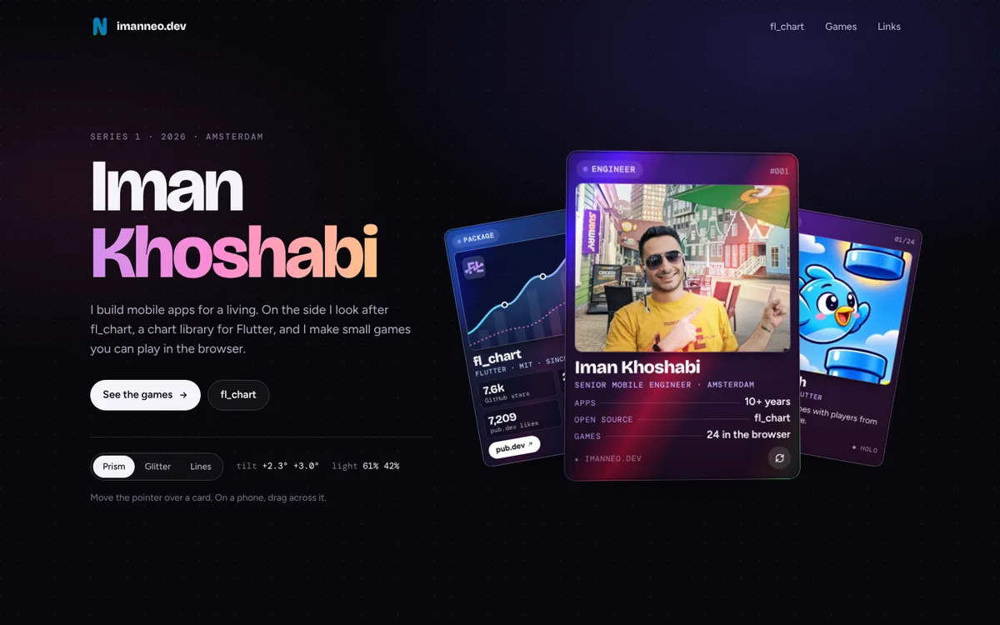
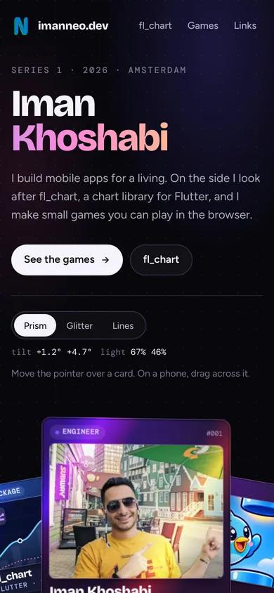
16Dark, shiny
Holo cards
Every part of the site is a collectible card with a holographic foil that tilts and shines under the cursor. Open a pack and get five games at random.
TryMove the pointer over a card, flip the middle one, and open a pack in the games section.
Open option 16 -


17Text mode
ASCII engine
A small real-time renderer that draws a 3D shape, the game covers and even a portrait with letters. The whole page is characters.
TryDrag the shape to turn it, switch it to portrait, and change the characters to blocks.
Open option 17 -
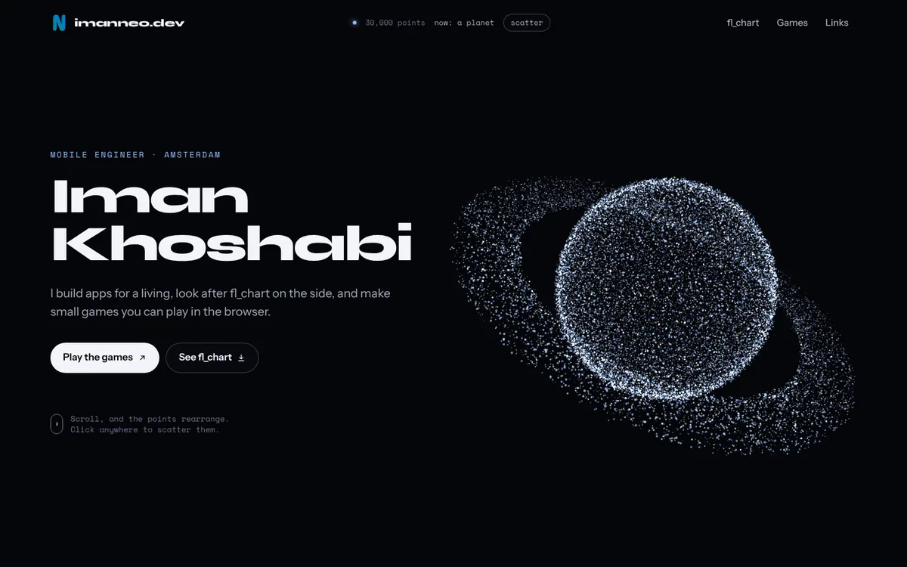
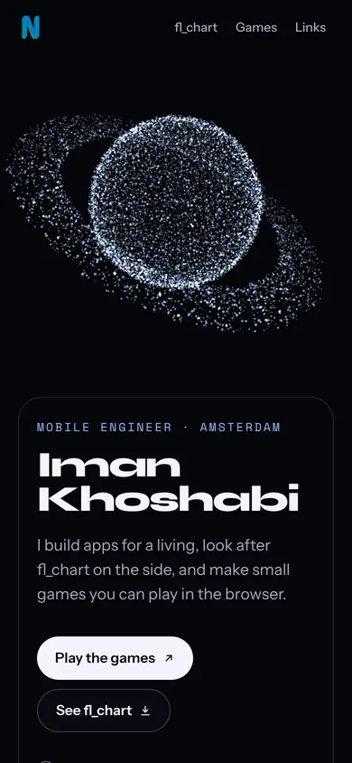
18Dark, 3D
Particle type
Thousands of points that fly together into a new shape for every section: a planet, the release chart, a game pad and an at sign. Click and they scatter.
TryScroll and the points rearrange. Click anywhere to scatter them.
Open option 18 -


19My pickLight, 3D
Exploded view
A phone in 3D that comes apart into seven layers as you scroll. Each layer is a part of the site, and the parts list brings a layer forward.
TryScroll to take the phone apart, hover a row in the parts list, and drag the phone to see its back.
Open option 19 -
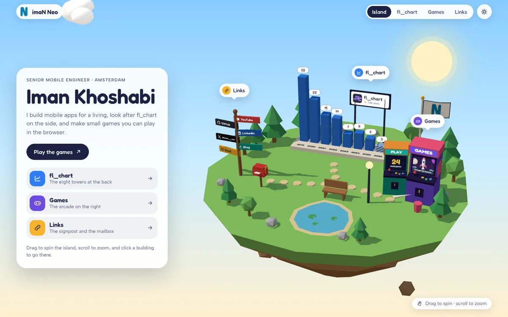
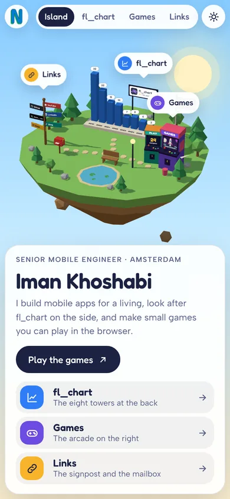
20Playful, 3D
Tiny world
A small low-poly island you can spin. The towers are the fl_chart releases, the arcade holds the games and the signpost has the links. It has a day and a night.
TryClick the arcade, hover a chart tower, and switch to night with the button in the top corner.
Open option 20
Round one · 01 to 10
Geeky, built around you
The first ten. Each design is a different way to read you and your work, from a terminal to a datasheet.
-

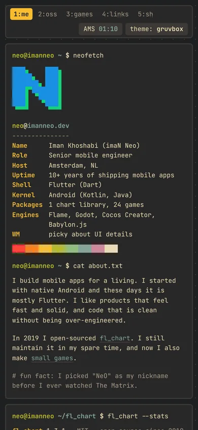
01Dark, warm
The riced terminal
A tiling desktop of terminal panes. Everything is readable at a glance, and the shell at the bottom really takes commands.
TryType
Open option 1helpin the shell at the bottom.play trickleandtheme tokyowork too. -

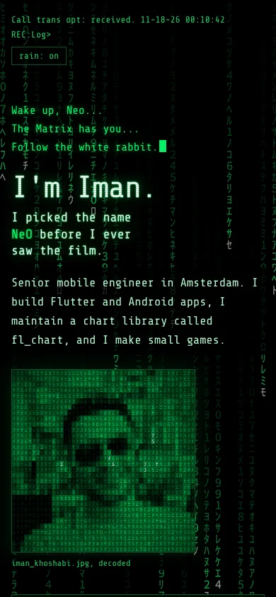
02Dark, green
Wake up, Neo
Digital rain, a red pill for the games and a blue pill for the code. Built on the nickname you picked before you saw the film.
TryTake a pill. The red one goes to the games, the blue one to the code.
Open option 2 -


03Dark, neon
Life in charts
The site as a dashboard in the fl_chart sample app's own colours. Every section is a chart you can touch, drawn from real numbers.
TryHover any chart, and switch the big one to per year.
Open option 3 -
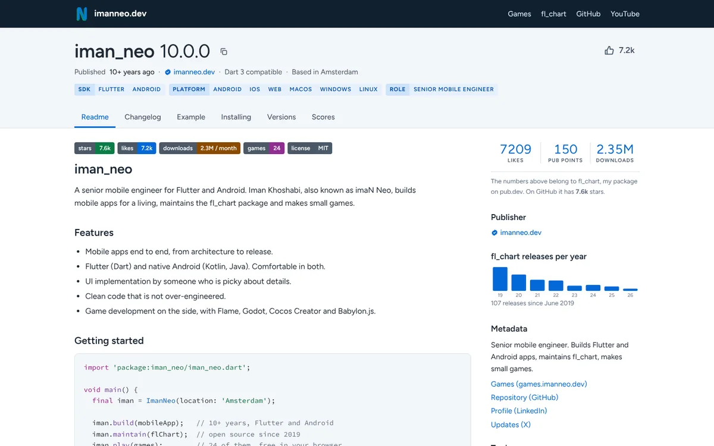
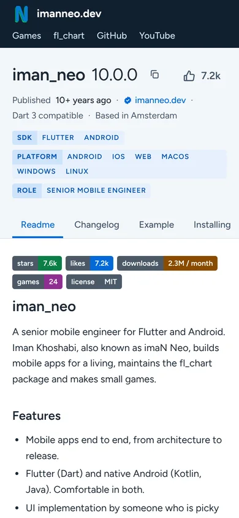
04Light
The package page
You, published as a package: Readme, Changelog, Example, Installing, Versions and Scores tabs, with a score box on the side.
TryOpen the Versions and Scores tabs.
Open option 4 -

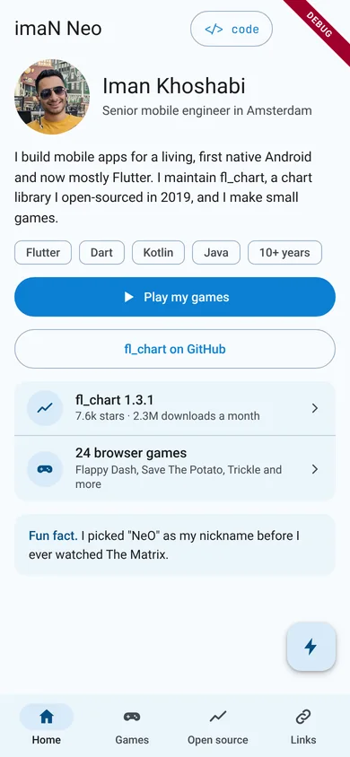
05Round one pickDark IDE, light app
main.dart
An IDE on the left, a phone on the right. The Dart code builds the app you are looking at, and hot reload really reloads it.
TryPress R for hot reload, or turn on Select widget and click something in the app.
Open option 5 -


06Dark, pixel
Insert coin
An arcade cabinet. Your stats are the high scores, the games are the game select screen, and the arrow keys work.
TryPress Start, then move through the games with the arrow keys.
Open option 6 -
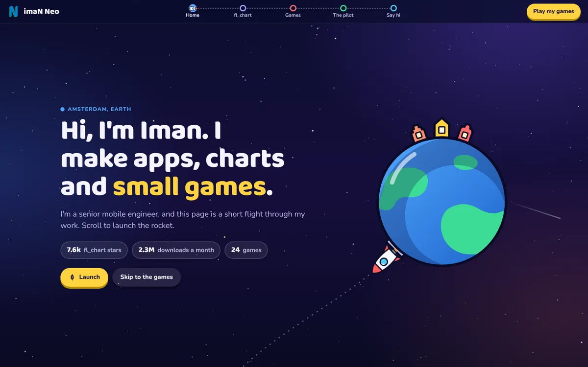

07Dark, playful
Through the galaxies
A rocket flies from planet to planet as you scroll, the way it does in your own game. Each planet is a part of your work.
TryScroll, or press Launch, and the rocket flies to the next planet.
Open option 7 -
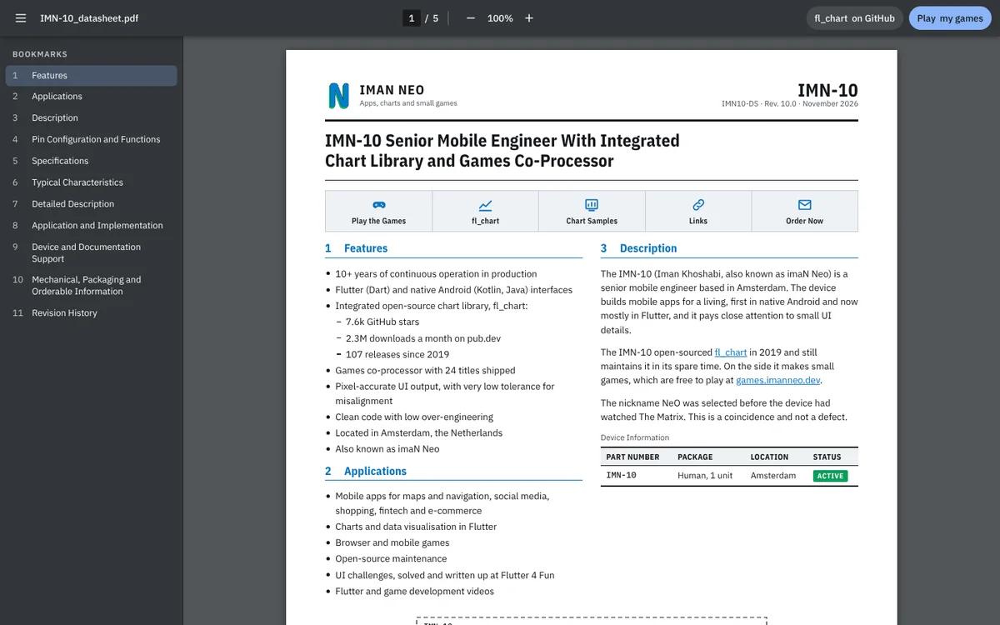
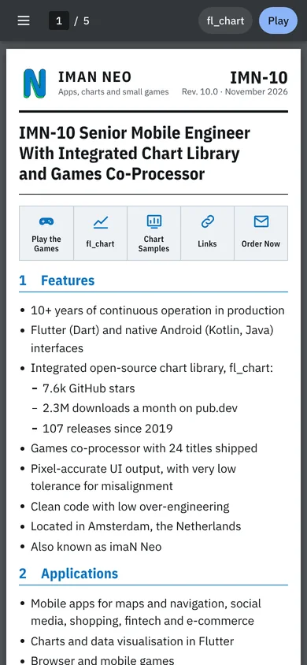
08Light, print
The datasheet
You, documented as an electronic component: pinout for the links, electrical characteristics for the stats, figures for the charts.
TryUse the bookmarks and the zoom buttons, like in a real PDF viewer.
Open option 8 -


09Retro desktop
NeoOS
A small operating system with draggable windows, a start menu, a games folder and a clock in the corner.
TryDrag the windows around, open the N menu, and look in the Trash.
Open option 9 -


10Light, loud
Neo-brutal N
Your blue N logo turned up: thick outlines, hard green shadows, big type and a stats ticker. The one that is not a costume.
TryFilter the small games by genre, and hover the release chart.
Open option 10
Inside each option there is a small pill in the corner that steps to the next one or brings you back here. It belongs to this preview, not to the designs.
If you want my opinion
My overall pick is 19. These are the three I would look at first in each round, and why.
Round two
- 19Exploded view is the one I would build. A phone that comes apart says mobile engineer before anyone reads a word. If you only scroll, it still reads like a normal page, and where 3D is missing it becomes one. The price is one 3D library, about 170 KB to download.
- 11Bento, if it should be fast and simple. Everything sits on one screen with no engine behind it, and adding a tile later is easy.
- 20Tiny world, if it should be remembered. It is a toy people spin and poke at, and the chart towers are your real release counts. It is also the least like a normal website.
Round one
- 05main.dart is still my pick of the first ten. It is geeky in the way that is most yours: Dart on the left, the running app on the right, and hot reload that works.
- 03Life in charts, if fl_chart should lead. The whole site is drawn in the colours of your own sample app, and every section is a chart you can touch.
- 10Neo-brutal N, if it should still feel right in three years. It grows out of your logo instead of putting on a costume.
Mixing works across rounds. For example Bento as the base, with the exploded phone in its biggest tile.
Where the ideas came from
You asked me to look around first. These are the pages I read, and what each one turned into.
- 8 Best Three.js Websites of 2026, UtsuboOne object with real weight and scrolling as the story became 19. A landscape to explore became 20. Type that breaks into particles became 18.
- 17 Web Design Trends for 2026, DesignRushBento grids became 11, glass in the style of Apple's Liquid Glass became 12, kinetic typography became 13, and gamification is behind the card packs in 16.
- Bento grids and kinetic typography, B12The house rules for 11 and 13: every tile has one job, headings move and body text does not, and motion is turned down for people who ask for less.
- Five nostalgic developer portfolios, WeAreDevelopersA whole site as one single interface. That thought became 14, where the site is a search box, and 17, where it is all characters.
- The rest is from tools and demos I already knew: the command menus of developer tools (14), node editors (15), holographic trading cards (16) and ASCII renderers (17).
Good to know
The small print behind all twenty.
- The fl_chart numbers are a snapshot from 17 November 2026: 7.6k stars, 2.3M downloads a month, 7,209 likes. The real site will refresh them from GitHub and pub.dev on its own.
- The game links point to games.imanneo.dev, so they start working once the games site has moved there.
- Samples 19 and 20 run on Three.js, which sits in the folder next to the pages. Sample 18 draws with WebGL directly. All three turn into a plain page where 3D is not available.
- One link still needs your yes. I could not confirm the mailing list link (iman-khoshabi.kit.com/profile). Round one shows it and round two leaves it out. Tell me if it is right.
- Your current site has the contact email with the domain written twice in
hugo.yaml. The new build fixes that. - Nothing on the live site changes until you pick.
Next step: reply with a number from either round. I will build that one into the real Hugo site and open a pull request for you to review.